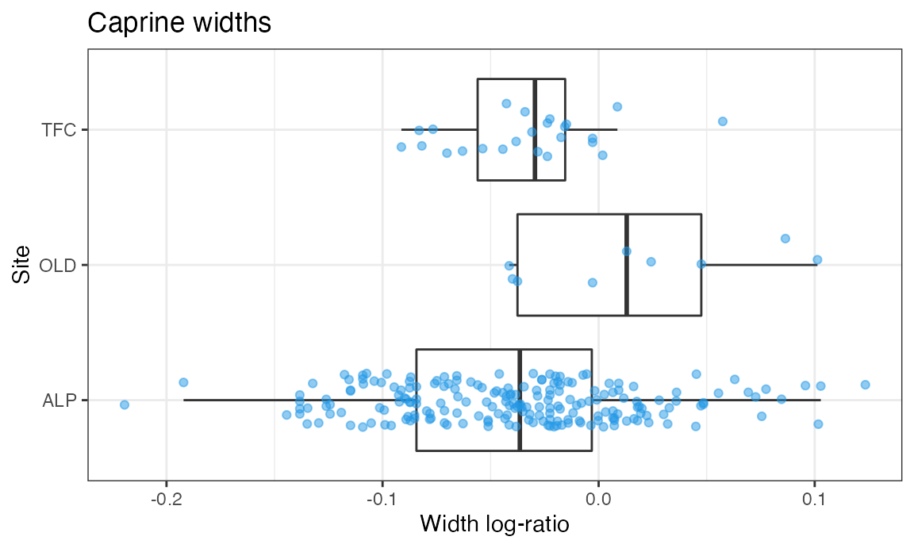

zoolog:
Zooarcheological Analysis with Log-Ratios
Jose M Pozo, Silvia Valenzuela-Lamas, Angela Trentacoste, Ariadna Nieto-Espinet and Silvia Guimarães Chiarelli
2021-02-02
index.RmdIntroduction
The package zoolog includes functions and reference data to generate and manipulate log-ratios (also known as log size index (LSI) values) from measurements obtained on zooarchaeological material. Log ratios are used to compare the relative (rather than the absolute) dimensions of animals from archaeological contexts (Meadow 1999). Essentially, the method compares archaeological measurements to a standard, producing a value that indicates how much larger or smaller the archaeological specimen is compared to that standard.
The methods included in the package were first developed in the framework of the ERC-Starting Grant 716298 ZooMWest (PI S. Valenzuela-Lamas), and were first used in the paper (Trentacoste, Nieto-Espinet, and Valenzuela-Lamas 2018). They are based on the techniques proposed by (Simpson 1941) and (Simpson, Roe, and Lewontin 1960), which calculates LSI values as such:
LSI (log size index) = (log x - log m) = log(x/m)
The zoolog package is based on the measurements and measurement abbreviations defined in (Von den Driesch 1976) and (Davis 1992). Several different sets of standard reference values for calculating the log ratios are included in the package. These standards include several published and widely used biometric datasets (i.e. (Davis 1996), (Albarella and Payne 2005)) as well as other less known standards. We are particularly grateful to Sabine Deschler-Erb and Barbara Stopp, from the University of Basel (Switzerland) for making the reference values of several specimens available through the ICAZ Roman Period Working Group, which have been included here with their permission.
In general, zooarcheological datasets are composed of skeletal remains representing many different anatomical body parts. In investigation of animal size, the analysis of measurements from a given anatomical element provides the best control for the variables affecting size and shape and, as such, it is the preferable option. Unfortunately, this approach is not always viable due to low sample sizes in some archaeological assemblages. This problem can be mitigated by calculating the LSI values for measurements with respect to a reference, which provides a means of aggregating biometric information from different body parts. The resulting log ratios can be compared and statistically analysed under reasonable conditions (Albarella 2002). However, length and width measurements of different anatomical elements still should not be directly compared or aggregated for statistical analysis.
The package includes a Thesaurus to facilitate its usage by research teams across the globe, and working in different languages and with different recording traditions. The Thesaurus enables the zoolog package to recognises many different names for taxa and skeletal elements (e.g. “Bos taurus”, “Bos”, “BT”, “bovino”, “bota”). Consequently, there is no need to use a particular, standardised recording code for the names of different taxa or elements.
Acknowledgements
The thesaurus has benefited from the contributions from Moussab Besso, Canan Cakirlar, Jwana Chahoud, Jacopo De Grossi Mazzorin, Sabine Deschler-Erb, Dimitrios Filioglou, Armelle Gardeisen, Sierra Harding, Pilar Iborra, Michael MacKinnon, Nimrod Marom, Claudia Minniti, Francesca Slim, Barbara Stopp, and Emmanuelle Vila.
The references’ database includes contributions from Sabine Deschler-Erb, Barbara Stopp, Francesca Slim, and Dimitris Filioglou.
We are grateful to all of them for their contributions, comments, and help. In addition, users are encouraged to contribute to the thesaurus and other references so that zoolog can be expanded and adapted to any database.
Installation
You can install the released version of zoolog from CRAN with:
install.packages("zoolog")And the development version from GitHub with:
install.packages("devtools")
library(devtools)
devtools::install_github("josempozo/zoolog@HEAD", build_vignettes = TRUE, force = TRUE)Reference
The log-ratios are calculated with respect to a standard reference. The package zoolog includes three reference datasets. In addition, the user can consider other references, or the provided references can be extended and updated integrating newer research data. Submission of extended/improved references is encouraged. Please, contact the maintainer through the provided email address to make the new reference fully accessible.
The references are provided as dataframes named Reference$NietoAlbarellaDavis, Reference$Basel, and Reference$Combi. They include reference values for the main domesticates and red deer: Bos taurus, Ovis aries, Capra hircus, Sus domesticus, and Cervus elaphus:
Reference$NietoDavisAlbarella Includes the measurements from a female cow from Late Neolithic Minferri in Catalonia (“Element Measure Standard Biometrical Data from a Cow Dated to the Early Bronze Age (Minferri, Catalonia),” n.d.), the mean values of the adult female Shetland sheep measurements described in (Davis 1996), and the pig measurements from (Albarella and Payne 2005).
Reference$Basel Includes the measurements compiled by Barbara Stopp from the reference collection in the Integrative Prähistorische und Naturwissenschaftliche Archäologie (IPNA, University of Basel, Switzerland). The specimens included are: Bos taurus Inv.nr. 2426 (Hinterwälder; female; 17 years old; live weight: 340 kg; withers height: 113 cm), Ovis musimon Inv.nr. 2266 (Male; adult), Capra hircus Inv.nr. 1597 (Male; adult), Sus scrofa Inv.nr. 1446 (male; 2-3 years old; life weight: 120 kg), Cervus elaphus Inv.nr. 2271 (male; adult).
Reference$Combi Includes the most comprehensive reference for each species so more measurements can be considered: the Late Neolithic female cow from Minferri site in present-day Catalonia (“Element Measure Standard Biometrical Data from a Cow Dated to the Early Bronze Age (Minferri, Catalonia),” n.d.), the mean measurements from the Male Soay sheep (of known age) and mean measurements from male/female goats (age unknown) from (Clutton-Brock et al. 1990), the pig measurements from Inv.nr. 1446 (male; 2-3 years old; life weight: 120 kg) from IPNA-Basel, and the red deer measurements from Inv.nr.2271 at IPNA-Basel registered by Barbara Stopp.
The details of the reference data are described in References.
Functions
The full list of functions is available under the ‘Help’ page of zoolog. Here we present the three main ones and describe their use:
LogRatios This function computes the log ratios of the measurements relative to standard reference values. Three references are provided with the package. By default the ‘Reference$Combi’ is used, as it is the most comprehensive so far. The function includes the option to ‘joinCategories’ allowing several taxa (typically Ovis, Capra, and unknown Ovis/Capra) to be considered together.
RemoveNACases This function removes the table rows for which all measurements of interest are non-available (NA). A particular list of measurement names can be explicitly provided or selected by a common initial pattern (e.g. prefix). The default setting removes the rows with no available log ratios to facilitate subsequent analysis of the data.
CondenseLogs This function condenses the calculated log ratio values into a reduced number of features by grouping log ratio values and selecting or calculating a feature value. By default the selected groups represent a single dimension, i.e.
LengthandWidth. Only one feature is extracted per group. Currently, two methods are possible: “priority” (default) or “average”. This operation is motivated by two circumstances. First, not all measurements are available for every bone specimen, which obstructs their direct comparison and statistical analysis. Second, several measurements can be strongly correlated (e.g. SD and Bd both represent bone width). Thus, considering them as independent would produce an over-representation of bone remains with multiple measurements per axis. Condensing each group of measurements into a single feature (e.g. one measure per axis) alleviates both problems. The default method (“priority”), selects the first available log ratio in each group. We provide the following by-default group and prioritization: For lengths, the first option is GL, then HTC. For widths, the order of priority is: Bd, BT, Bp, SD. This order maximises the robustness and reliability of the measurements, as priority is given to the most abundant, more replicable, and less age dependent measurements.The method ‘average’ extracts the mean per group, ignoring the non-available log ratios.
Thesaurus
A thesaurus set is defined in order to make the methods robust to different nomenclatures used in datasets created by different authors and in different languages. The user can also use other thesaurus sets, or can modify the provided one. In this latter case, please, contact the maintainer at the provided email address so that the additions can be incorporated into the new versions of the package. Your name will be added to the list of contributors, as you will help to make the package more robust and comprehensive.
So far, four thesauri are included in zoolog:
identifierThesaurusrefers to the column names that will be considered to calculate the log ratios. So far, it includes the categories ‘Taxon’, ‘Element’, ‘Measure’, and ‘Standard’. Each of these categories has different options (e.g.: ‘Taxon’ includes Taxon, TAX, species, animal, Specie, GenusSpecies, Especie, see below). This enables theLogRatiosfunction to recognise the relevant column and compute the log ratios regardless of its name as long as it is included in the relevant Thesaurus (taxonThesaurus,elementThesaurus,measureThesaurus).taxonThesaurusrefers to the various possibilities for naming taxa when recording animal bones. This enables theLogRatiosfunction to recognise the name of each species and to find the relevant biometrical reference no matter what it is called in the database and the reference file (e.g. if in the user database, ‘BT’ refers to Bos taurus, but this is written ‘bota’ in the osteometrical reference). TheLogRatiosfunction correctly matches these terms because both names (‘BT’ and ‘bota’) are included in the ‘Bos taurus’ category of thetaxonThesaurus. To facilitate the comparison of names, the function has been made case, punctuation and spacing insensitive by default (‘Bos’ is considered same as ‘bos’ and ‘Bos.’). You can see the categories currently included as follows:
library(zoolog)
thesaurusFile <- system.file("extdata", "taxonThesaurus.csv", package="zoolog")
thesaurusTax <- ReadThesaurus(thesaurusFile)
thesaurusTax
#> bos taurus bos primigenius ovis aries ovis orientalis
#> 1 bos taurus bos primigenius ovis aries ovis orientalis
#> 2 bota BP ovar ovis musimon
#> 3 bos bos prim ovis muflon
#> 4 cattle auroch sheep mouflon
#> 5 BT urus OA
#> 6 bovino ure oveja
#> 7 Grands Bovides Boeuf uro Ovicaprines Mouton
#> 8 vaca auroque ov
#> 9 B ovella
#> 10 OVA
#> 11
#> capra hircus capra aegagrus ovis/capra sus domesticus
#> 1 capra hircus capra aegagrus ovis/capra sus domesticus
#> 2 cahi wild goat oc sudo
#> 3 capra cabra salvatge caprine sus
#> 4 goat cabra selvagem s/g pig
#> 5 CH cabra salvaje sheep/goat SS
#> 6 cabra chevre sauvage Sh/G cerdo
#> 7 pecora ovicaprino Suides Porc
#> 8 cabra O/C porc
#> 9 CAH Ovicaprines Ovis-Capra
#> 10 ovicapri
#> 11 O
#> sus scrofa cervus elaphus
#> 1 sus scrofa cervus elaphus
#> 2 wild boar ceel
#> 3 senglar cervus
#> 4 porc senglar red deer
#> 5 jabali CE
#> 6 javali ciervo
#> 7 sanglier Cervides Cerf
#> 8 wss CEE
#> 9 cervol
#> 10 ciervo
#> 11-
elementThesaurusrefers to the various possibilities for naming anatomical elements when recording animal bones. This enables theLogRatiosfunction to recognise the name of each element and to find the relevant biometrical reference regardless of what it is called in the database and the reference file (e.g. if in the user database, ‘omero’ refers to humerus, but this is written ‘HU’ in the osteometrical reference). TheLogRatiosfunction correctly matches these terms because both categories (‘omero’ and ‘HU’) are included in the ‘humerus’ category of theelementThesaurus. To facilitate the comparison of names, the function has been made case, quotation and spacing insensitive by default (‘Hum’ is considered same as ‘hum’ and ‘Hum.’). You can see the categories currently included as follows:
thesaurusFile <- system.file("extdata", "elementThesaurus.csv", package="zoolog")
thesaurusEL <- ReadThesaurus(thesaurusFile)
thesaurusEL
#> scapula humerus radius ulna
#> 1 scapula humerus radius ulna
#> 2 SC HU RA cubit
#> 3 scapula hum rad cubito
#> 4 scapola Humerus radi cubitus
#> 5 esc humer radio
#> 6 scap. omero Membre-anterieur radius
#> 7 escap. Membre-anterieur humerus
#> 8 Escapula Humero
#> 9
#> 10
#> 11
#> 12
#> 13
#> 14
#> 15
#> 16
#> 17
#> 18
#> 19
#> metacarpus metacarpus II metacarpus III metacarpus IV metacarpus V
#> 1 metacarpus metacarpus II metacarpus III metacarpus IV metacarpus V
#> 2 metacarpal I metacarpal II metacarpal III metacarpal IV metacarpal V
#> 3 MC I MC II MC III MC IV MC V
#> 4 metac. I metac. II metac. III metac. IV metac. V
#> 5 MC1 MC2 MC3 MC4 MC5
#> 6 metacarpo I metacarpo II metacarpo III metacarpo IV metacarpo V
#> 7 metacarp I metacarp II metacarp III metacarp IV metacarp V
#> 8 metacarpus I
#> 9 Metacarpe Canon
#> 10 metacarpal
#> 11 MC
#> 12 metac
#> 13 metacarpo
#> 14 metacarp
#> 15
#> 16
#> 17
#> 18
#> 19
#> pelvis femur tibia calcaneum
#> 1 pelvis femur tibia calcaneum
#> 2 PE FE TI CAL
#> 3 coxal fem TIB calca
#> 4 cox femore Membre-posterieur tibia Calcani
#> 5 innominate Membre-posterieur Femur calcan
#> 6 calcagno
#> 7 Tarse calcaneum
#> 8 Calcaneus
#> 9 CA
#> 10 calcaneo
#> 11
#> 12
#> 13
#> 14
#> 15
#> 16
#> 17
#> 18
#> 19
#> astragalus metatarsus metatarsus II metatarsus III metatarsus IV
#> 1 astragalus metatarsus metatarsus II metatarsus III metatarsus IV
#> 2 AS metatarsal I metatarsal II metatarsal III metatarsal IV
#> 3 talus MT I MT II MT III MT IV
#> 4 AST metat. I metat. II metat. III metat. IV
#> 5 astragalo MT1 MT2 MT3 MT4
#> 6 astrag metatarso I metatarso II metatarso III metatarso IV
#> 7 Tarse Talus metatars I metatars II metatars III metatars IV
#> 8 astragal metatarsus I
#> 9 Metatarse Canon
#> 10 metatarsal
#> 11 MT
#> 12 metat
#> 13 metatarso
#> 14 metatars
#> 15
#> 16
#> 17
#> 18
#> 19
#> metatarsus V centrotarsale anterior first phalanx first phalanx
#> 1 metatarsus V centrotarsale anterior first phalanx first phalanx
#> 2 metatarsal V centrotarsal Phalange 1 ant Phalange 1
#> 3 MT V escafocuboideo Phalanx 1 ant. Phalanx 1
#> 4 metat. V P1 ant P1
#> 5 MT5 falange 1 ant falange 1
#> 6 metatarso V PH1A PH1
#> 7 metatars V phal 1 ant phal 1
#> 8 Phalange I anterior Phalange I
#> 9 fal1 ant fal 1
#> 10 ant 1fal 1 fal
#> 11 ant fal 1 Phalange 1 ant/post
#> 12 1 fal ant Phalanx 1 ant/post
#> 13 P1 ant/post
#> 14 falange 1 ant/post
#> 15 PH1 ant/post
#> 16 phal 1 ant/post
#> 17 Phalange I ant/post
#> 18 fal 1 ant/post
#> 19 1 fal ant/post
#> posterior first phalanx anterior second phalanx second phalanx
#> 1 posterior first phalanx anterior second phalanx second phalanx
#> 2 Phalange 1 post Phalange 2 ant Phalange 2
#> 3 Phalanx 1 post. Phalanx 2 ant. Phalanx 2
#> 4 P1 post P2 ant P2
#> 5 falange 1 post falange 2 ant falange 2
#> 6 PH1P PH2A PH2
#> 7 phal 1 post phal 2 ant phal 2
#> 8 Phalange I post Phalange II anterior Phalange II
#> 9 fal1 post fal2 ant fal 2
#> 10 post 1fal ant 2fal 2 fal
#> 11 post fal 1 ant fal 2 Phalange 2 ant/post
#> 12 1 fal post 2 fal ant Phalanx 2 ant/post
#> 13 P2 ant/post
#> 14 falange 2 ant/post
#> 15 PH2 ant/post
#> 16 phal 2 ant/post
#> 17 Phalange II ant/post
#> 18 fal 2 ant/post
#> 19 2 fal ant/post
#> posterior second phalanx anterior third phalanx third phalanx
#> 1 posterior second phalanx anterior third phalanx third phalanx
#> 2 Phalange 2 post Phalange 3 ant Phalange 3
#> 3 Phalanx 2 post. Phalanx 3 ant. Phalanx 3
#> 4 P2 post P3 ant P3
#> 5 falange 2 post falange 3 ant falange 3
#> 6 PH2P PH3A PH3
#> 7 phal 2 post phal 3 ant phal 3
#> 8 Phalange II posterior Phalange III anterior Phalange III
#> 9 fal 2 post fal3 ant fal 3
#> 10 post 2fal ant 3fal 3 fal
#> 11 post fal 2 ant fal 3 Phalange 3 ant/post
#> 12 2 fal post 3 fal ant Phalanx 3 ant/post
#> 13 P3 ant/post
#> 14 falange 3 ant/post
#> 15 PH3 ant/post
#> 16 phal 3 ant/post
#> 17 Phalange III ant/post
#> 18 fal 3 ant/post
#> 19 3 fal ant/post
#> posterior third phalanx Molar 1 Molar 2 Molar 3 Premolar 1 Premolar 2
#> 1 posterior third phalanx Molar 1 Molar 2 Molar 3 Premolar 1 Premolar 2
#> 2 Phalange 3 post M1 M2 M3
#> 3 Phalanx 3 post.
#> 4 P3 post
#> 5 falange 3 post
#> 6 PH3P
#> 7 phal 3 post
#> 8 Phalange III posterior
#> 9 fal 3 post
#> 10 post 3fal
#> 11 post fal 3
#> 12 3 fal post
#> 13
#> 14
#> 15
#> 16
#> 17
#> 18
#> 19
#> lower Molar 1 lower Molar 2 lower Molar 3 lower Premolar 1 lower Premolar 2
#> 1 lower Molar 1 lower Molar 2 lower Molar 3 lower Premolar 1 lower Premolar 2
#> 2 LM1 LM2 LM3
#> 3
#> 4
#> 5
#> 6
#> 7
#> 8
#> 9
#> 10
#> 11
#> 12
#> 13
#> 14
#> 15
#> 16
#> 17
#> 18
#> 19-
measureThesaurusrefers to the various possibilities for naming measurements. In general, the English abbreviations from (Von den Driesch 1976) and (Davis 1992) are widely used. But this enables other nomenclatures (e.g. original German abbreviations in (Von den Driesch 1976)) to be included, or several measurements to be nested under the same category. In this case, GLl is considered as GL.
Examples
Reading data and calculating log ratios
This example reads a dataset from a file in csv format and computes the log-ratios. Then, the cases with no available log-ratios are removed. Finally, the resulting dataset is saved in a file in csv format.
The first step is to set the local path to the folder where you have the dataset to be analysed (this is typically a comma-separated value (csv) file). Here the example dataset from (Valenzuela-Lamas 2008) included in the package is used:
library(zoolog)
dataFile <- system.file("extdata", "dataValenzuelaLamas2008.csv.gz",
package = "zoolog")
data = read.csv2(dataFile,
quote="\"", header=TRUE, na="",
fileEncoding="UTF-8",
stringsAsFactors = TRUE)We now calculate the log-ratios using the function LogRatios. Only measurements that have an associated standard will be included in this calculation. The log values will appear as new columns with the prefix ‘log’ following the original columns with the raw measurements:
dataWithLog <- LogRatios(data)
head(dataWithLog)[,-c(6:20,32:63)]
#> Site N.inv UE Especie Os GL Bp Dp SD DD Bd Dd BT GLc BFd
#> 1 ALP 3629 8427 avif 1 fal NA NA NA NA NA NA NA NA NA NA
#> 2 ALP 4918 10364 bota 1 fal 54.0 31.3 30.6 28.1 26.3 27.5 20.0 NA NA NA
#> 3 ALP 4919 10364 bota 1 fal 54.5 27.9 31.8 26.0 22.8 25.3 19.5 NA NA NA
#> 4 ALP 2211 7105 bota 1 fal 47.6 25.2 25.2 20.6 23.7 17.8 NA NA NA NA
#> 5 ALP 1257 7093 bota 1 fal 51.1 24.1 2.7 21.5 17.0 NA NA NA NA NA
#> 6 ALP 4693 10258 oc 1 fal 31.0 10.7 12.4 NA 7.4 8.9 8.0 NA NA NA
#> Dl HmandM3 logBd logBFd logBG logBp logBPC logBT logDd logDl logDp logDPA
#> 1 NA NA NA NA NA NA NA NA NA NA NA NA
#> 2 NA NA NA NA NA NA NA NA NA NA NA NA
#> 3 NA NA NA NA NA NA NA NA NA NA NA NA
#> 4 NA NA NA NA NA NA NA NA NA NA NA NA
#> 5 NA NA NA NA NA NA NA NA NA NA NA NA
#> 6 NA NA NA NA NA NA NA NA NA NA NA NA
#> logGB logGL logGLc logGLP logH logL logLA logLAR logLG logSD logSH logSLC
#> 1 NA NA NA NA NA NA NA NA NA NA NA NA
#> 2 NA NA NA NA NA NA NA NA NA NA NA NA
#> 3 NA NA NA NA NA NA NA NA NA NA NA NA
#> 4 NA NA NA NA NA NA NA NA NA NA NA NA
#> 5 NA NA NA NA NA NA NA NA NA NA NA NA
#> 6 NA NA NA NA NA NA NA NA NA NA NA NAIf we observe more carefully the example dataset, we can see that the astragali have been assigned a GL measurement, instead of GLl. For this we can use the function InCategory, which allows to select cases taking into account the thesaurus:
AScases <- InCategory(dataWithLog$Os, "talus", zoologThesaurus$element)
head(dataWithLog[AScases,-c(6:20,32:63)])
#> Site N.inv UE Especie Os GL Bp Dp SD DD Bd Dd BT GLc BFd Dl
#> 7503 ALP 4410 8001 bota talus 58.4 NA NA NA NA 31.5 NA NA NA NA 31.4
#> 7504 ALP 1181 7011 bota talus 57.7 NA NA NA NA 35.7 NA NA NA NA 32.8
#> 7505 ALP 1180 7011 bota talus 58.8 NA NA NA NA NA NA NA NA NA NA
#> 7506 ALP 1136 7039 bota talus 58.9 NA NA NA NA 39.3 NA NA NA NA 34.4
#> 7507 ALP 1678 7092 bota talus 59.4 NA NA NA NA 39.8 NA NA NA NA 34.9
#> 7508 TFC 617 1061 bota talus 56.6 NA NA NA NA 34.0 NA NA NA NA 32.3
#> HmandM3 logBd logBFd logBG logBp logBPC logBT logDd logDl logDp
#> 7503 NA -0.092754053 NA NA NA NA NA NA NA NA
#> 7504 NA -0.038396391 NA NA NA NA NA NA NA NA
#> 7505 NA NA NA NA NA NA NA NA NA NA
#> 7506 NA 0.003327943 NA NA NA NA NA NA NA NA
#> 7507 NA 0.008818465 NA NA NA NA NA NA NA NA
#> 7508 NA -0.059585690 NA NA NA NA NA NA NA NA
#> logDPA logGB logGL logGLc logGLP logH logL logLA logLAR logLG logSD logSH
#> 7503 NA NA NA NA NA NA NA NA NA NA NA NA
#> 7504 NA NA NA NA NA NA NA NA NA NA NA NA
#> 7505 NA NA NA NA NA NA NA NA NA NA NA NA
#> 7506 NA NA NA NA NA NA NA NA NA NA NA NA
#> 7507 NA NA NA NA NA NA NA NA NA NA NA NA
#> 7508 NA NA NA NA NA NA NA NA NA NA NA NA
#> logSLC
#> 7503 NA
#> 7504 NA
#> 7505 NA
#> 7506 NA
#> 7507 NA
#> 7508 NAThis is a dataset simplification that has been used by some researchers. It is possible because GLl is only relevant for the astragalus, while GL is not applicable to it. Thus, there cannot be any ambiguity between both measures since they can be identified by the bone element. However, since the reference uses the proper measure name for each bone element (GLl for the astragalus), the reference measure has not been correctly identified. Consequently, the log ratio logGL has NA values and the column logGLl does not exists.
The optional parameter mergedMeasures facilitates the processing of this type of simplified datasets. For the example data, we can use
GLandGLl <- list(c("GL", "GLl"))
dataWithLog <- LogRatios(data, mergedMeasures = GLandGLl)
head(dataWithLog[AScases,-c(6:20,32:63)])
#> Site N.inv UE Especie Os GL Bp Dp SD DD Bd Dd BT GLc BFd Dl
#> 7503 ALP 4410 8001 bota talus 58.4 NA NA NA NA 31.5 NA NA NA NA 31.4
#> 7504 ALP 1181 7011 bota talus 57.7 NA NA NA NA 35.7 NA NA NA NA 32.8
#> 7505 ALP 1180 7011 bota talus 58.8 NA NA NA NA NA NA NA NA NA NA
#> 7506 ALP 1136 7039 bota talus 58.9 NA NA NA NA 39.3 NA NA NA NA 34.4
#> 7507 ALP 1678 7092 bota talus 59.4 NA NA NA NA 39.8 NA NA NA NA 34.9
#> 7508 TFC 617 1061 bota talus 56.6 NA NA NA NA 34.0 NA NA NA NA 32.3
#> HmandM3 logBd logBFd logBG logBp logBPC logBT logDd logDl logDp
#> 7503 NA -0.092754053 NA NA NA NA NA NA NA NA
#> 7504 NA -0.038396391 NA NA NA NA NA NA NA NA
#> 7505 NA NA NA NA NA NA NA NA NA NA
#> 7506 NA 0.003327943 NA NA NA NA NA NA NA NA
#> 7507 NA 0.008818465 NA NA NA NA NA NA NA NA
#> 7508 NA -0.059585690 NA NA NA NA NA NA NA NA
#> logDPA logGB logGL logGLc logGLP logH logL logLA logLAR logLG logSD
#> 7503 NA NA -0.02597884 NA NA NA NA NA NA NA NA
#> 7504 NA NA -0.03121588 NA NA NA NA NA NA NA NA
#> 7505 NA NA -0.02301436 NA NA NA NA NA NA NA NA
#> 7506 NA NA -0.02227639 NA NA NA NA NA NA NA NA
#> 7507 NA NA -0.01860524 NA NA NA NA NA NA NA NA
#> 7508 NA NA -0.03957526 NA NA NA NA NA NA NA NA
#> logSH logSLC
#> 7503 NA NA
#> 7504 NA NA
#> 7505 NA NA
#> 7506 NA NA
#> 7507 NA NA
#> 7508 NA NAThis option allows to automatically select, for each bone element, the corresponding measure present in the reference. Observe that now the log ratios have been computed and assigned to the column logGL.
Using same ovis referece for all caprine
We could be interested in obtaining the log ratios of all caprine, including ovis aries, capra hircus, and ovis capra, with respect to the reference for ovis aries. This can be set using the argument joinCategories.
caprineCategory <- list(ovar = c("sheep", "capra", "oc"))
dataWithLog=LogRatios(data, joinCategories = caprineCategory, mergedMeasures = GLandGLl)
head(dataWithLog)[,-c(6:20,32:63)]
#> Site N.inv UE Especie Os GL Bp Dp SD DD Bd Dd BT GLc BFd
#> 1 ALP 3629 8427 avif 1 fal NA NA NA NA NA NA NA NA NA NA
#> 2 ALP 4918 10364 bota 1 fal 54.0 31.3 30.6 28.1 26.3 27.5 20.0 NA NA NA
#> 3 ALP 4919 10364 bota 1 fal 54.5 27.9 31.8 26.0 22.8 25.3 19.5 NA NA NA
#> 4 ALP 2211 7105 bota 1 fal 47.6 25.2 25.2 20.6 23.7 17.8 NA NA NA NA
#> 5 ALP 1257 7093 bota 1 fal 51.1 24.1 2.7 21.5 17.0 NA NA NA NA NA
#> 6 ALP 4693 10258 oc 1 fal 31.0 10.7 12.4 NA 7.4 8.9 8.0 NA NA NA
#> Dl HmandM3 logBd logBFd logBG logBp logBPC logBT logDd logDl logDp logDPA
#> 1 NA NA NA NA NA NA NA NA NA NA NA NA
#> 2 NA NA NA NA NA NA NA NA NA NA NA NA
#> 3 NA NA NA NA NA NA NA NA NA NA NA NA
#> 4 NA NA NA NA NA NA NA NA NA NA NA NA
#> 5 NA NA NA NA NA NA NA NA NA NA NA NA
#> 6 NA NA NA NA NA NA NA NA NA NA NA NA
#> logGB logGL logGLc logGLP logH logL logLA logLAR logLG logSD logSH logSLC
#> 1 NA NA NA NA NA NA NA NA NA NA NA NA
#> 2 NA NA NA NA NA NA NA NA NA NA NA NA
#> 3 NA NA NA NA NA NA NA NA NA NA NA NA
#> 4 NA NA NA NA NA NA NA NA NA NA NA NA
#> 5 NA NA NA NA NA NA NA NA NA NA NA NA
#> 6 NA NA NA NA NA NA NA NA NA NA NA NANote that this option does not remove the distinction in the data between the different species, it just indicates that for these taxa the log ratios must be computed from the same reference (ovar).
Pruning the data from cases with no available measure
The cases without log-ratios can be removed to facilitate subsequent analyses:
dataWithLogPruned=RemoveNACases(dataWithLog)You may want to write the resulting file in the working directory (you need to set it first):
write.csv2(dataWithLogPruned, "myDataWithLogValues.csv",
quote=FALSE, row.names=FALSE, na="",
fileEncoding="UTF-8")Condensing log values
After calculating log ratios using the LogRatios function, many rows in the resultant dataframe (dataWithLog in the example above) may contain multiple log values, i.e. you will have several log values associated with a particular archaeological specimen. When analysing log ratios, it is preferential to avoid overrepresentation of bones with a greater number of measurements and account for each specimen only once. The CondenseLogs function extracts one length and one width value from each row and places these in new Length and Width columns.The ‘priority’ method described in (Trentacoste, Nieto-Espinet, and Valenzuela-Lamas 2018) has been set as default. Nevertheless, other options (e.g. average of all width log values for a given specimen) can be chosen if preferred. In this case, the default option has been used:
dataWithSummary <- CondenseLogs(dataWithLogPruned)
head(dataWithSummary)[, -c(6:20,32:63)]
#> Site N.inv UE Especie Os GL Bp Dp SD DD Bd Dd BT GLc BFd
#> 1 ALP 3016 8525 ceel 1fal 50.8 17.9 23.4 15.1 17.8 15.2 NA NA NA NA
#> 2 ALP 2907 8068 ceel 1fal 52.3 20.1 22.6 15.4 1.7 1.6 NA NA NA NA
#> 3 ALP 2906 8068 ceel 1fal 52.9 17.2 NA 14.9 17.7 15.5 NA NA NA NA
#> 4 ALP 3453 10410 ovar 1fal ant 27.1 9.9 12.3 17.9 9.0 9.0 NA NA NA NA
#> 5 ALP 3455 10410 ovar 1fal ant 27.6 9.6 12.2 7.6 8.9 8.3 NA NA NA NA
#> 6 ALP 3524 10122 ovar 1fal ant 27.7 9.2 11.5 7.5 9.4 8.1 NA NA NA NA
#> Dl HmandM3 logBd logBFd logBG logBp logBPC logBT logDd logDl
#> 1 NA NA NA NA NA -0.07348283 NA NA NA NA
#> 2 NA NA NA NA NA -0.02313980 NA NA NA NA
#> 3 NA NA NA NA NA -0.09080741 NA NA NA NA
#> 4 NA NA -0.08911977 NA NA -0.07991177 NA NA NA NA
#> 5 NA NA -0.12428419 NA NA -0.09327573 NA NA NA NA
#> 6 NA NA -0.13487726 NA NA -0.11175913 NA NA NA NA
#> logDp logDPA logGB logGL logGLc logGLP logH logL logLA logLAR
#> 1 NA NA NA NA NA NA NA NA NA NA
#> 2 NA NA NA NA NA NA NA NA NA NA
#> 3 NA NA NA NA NA NA NA NA NA NA
#> 4 -0.07265930 NA NA -0.10786052 NA NA NA NA NA NA
#> 5 -0.07620458 NA NA -0.09992073 NA NA NA NA NA NA
#> 6 -0.10186657 NA NA -0.09835005 NA NA NA NA NA NA
#> logLG logSD logSH logSLC Length Width
#> 1 NA NA NA NA NA -0.07348283
#> 2 NA NA NA NA NA -0.02313980
#> 3 NA NA NA NA NA -0.09080741
#> 4 NA 0.2629585 NA NA -0.10786052 -0.08911977
#> 5 NA -0.1090810 NA NA -0.09992073 -0.12428419
#> 6 NA -0.1148333 NA NA -0.09835005 -0.13487726Examples of different plots for data visualisation
Condensed log values can be visualised as histograms and box plots using ggplot (Wickham 2011). Here we will look at some examples of plotting values from sheep/goat.
Preparing the data
The integration of the thesaurus functionality facilitates the use of datasets with heterogenous nomenclatures, without further preprocessing. An extensive catalogue of names for equivalent categories have been integrated in the provided thesaurus set zoologThesaurus. These equivalences are internally and silently managed without requiring any action from the user. However, it can be also interesting to explicitly standardize the data to make figures legible to a wider audience. This is especially useful when different nomenclature for the same concept is found in the same dataset, for instance “sheep” and “ovis” for the same taxon or “hum” and “HU” for the bone element.
In the example data, zoologThesaurus will change for instance "ovar" to "ovis aries".
dataStandardized <- StandardizeDataSet(dataWithSummary)
head(dataStandardized)[, -c(6:20,32:63)]
#> Site N.inv UE Taxon Element GL Bp Dp SD
#> 1 ALP 3016 8525 cervus elaphus first phalanx 50.8 17.9 23.4 15.1
#> 2 ALP 2907 8068 cervus elaphus first phalanx 52.3 20.1 22.6 15.4
#> 3 ALP 2906 8068 cervus elaphus first phalanx 52.9 17.2 NA 14.9
#> 4 ALP 3453 10410 ovis aries anterior first phalanx 27.1 9.9 12.3 17.9
#> 5 ALP 3455 10410 ovis aries anterior first phalanx 27.6 9.6 12.2 7.6
#> 6 ALP 3524 10122 ovis aries anterior first phalanx 27.7 9.2 11.5 7.5
#> DD Bd Dd BT GLc BFd Dl HmandM3 logBd logBFd logBG logBp
#> 1 17.8 15.2 NA NA NA NA NA NA NA NA NA -0.07348283
#> 2 1.7 1.6 NA NA NA NA NA NA NA NA NA -0.02313980
#> 3 17.7 15.5 NA NA NA NA NA NA NA NA NA -0.09080741
#> 4 9.0 9.0 NA NA NA NA NA NA -0.08911977 NA NA -0.07991177
#> 5 8.9 8.3 NA NA NA NA NA NA -0.12428419 NA NA -0.09327573
#> 6 9.4 8.1 NA NA NA NA NA NA -0.13487726 NA NA -0.11175913
#> logBPC logBT logDd logDl logDp logDPA logGB logGL logGLc logGLP
#> 1 NA NA NA NA NA NA NA NA NA NA
#> 2 NA NA NA NA NA NA NA NA NA NA
#> 3 NA NA NA NA NA NA NA NA NA NA
#> 4 NA NA NA NA -0.07265930 NA NA -0.10786052 NA NA
#> 5 NA NA NA NA -0.07620458 NA NA -0.09992073 NA NA
#> 6 NA NA NA NA -0.10186657 NA NA -0.09835005 NA NA
#> logH logL logLA logLAR logLG logSD logSH logSLC Length Width
#> 1 NA NA NA NA NA NA NA NA NA -0.07348283
#> 2 NA NA NA NA NA NA NA NA NA -0.02313980
#> 3 NA NA NA NA NA NA NA NA NA -0.09080741
#> 4 NA NA NA NA NA 0.2629585 NA NA -0.10786052 -0.08911977
#> 5 NA NA NA NA NA -0.1090810 NA NA -0.09992073 -0.12428419
#> 6 NA NA NA NA NA -0.1148333 NA NA -0.09835005 -0.13487726We may be interested in selecting all caprine elements. This can be done even without standardizing the data using the function InCategory:
dataOC <- subset(dataWithSummary, InCategory(Especie,
c("sheep", "capra", "oc"),
zoologThesaurus$taxon))
head(dataOC)[, -c(6:20,32:63)]
#> Site N.inv UE Especie Os GL Bp Dp SD DD Bd Dd BT GLc BFd Dl
#> 4 ALP 3453 10410 ovar 1fal ant 27.1 9.9 12.3 17.9 9.0 9.0 NA NA NA NA NA
#> 5 ALP 3455 10410 ovar 1fal ant 27.6 9.6 12.2 7.6 8.9 8.3 NA NA NA NA NA
#> 6 ALP 3524 10122 ovar 1fal ant 27.7 9.2 11.5 7.5 9.4 8.1 NA NA NA NA NA
#> 7 ALP 3525 10122 ovar 1fal ant 27.8 9.1 11.3 7.5 9.2 8.2 NA NA NA NA NA
#> 8 ALP 3456 10410 ovar 1fal ant 28.0 9.6 12.5 7.8 8.9 8.4 NA NA NA NA NA
#> 9 ALP 3522 10122 ovar 1fal ant 28.2 9.3 11.9 7.6 9.1 7.1 NA NA NA NA NA
#> HmandM3 logBd logBFd logBG logBp logBPC logBT logDd logDl
#> 4 NA -0.08911977 NA NA -0.07991177 NA NA NA NA
#> 5 NA -0.12428419 NA NA -0.09327573 NA NA NA NA
#> 6 NA -0.13487726 NA NA -0.11175913 NA NA NA NA
#> 7 NA -0.12954843 NA NA -0.11650557 NA NA NA NA
#> 8 NA -0.11908299 NA NA -0.09327573 NA NA NA NA
#> 9 NA -0.19210393 NA NA -0.10706401 NA NA NA NA
#> logDp logDPA logGB logGL logGLc logGLP logH logL logLA logLAR
#> 4 -0.07265930 NA NA -0.10786052 NA NA NA NA NA NA
#> 5 -0.07620458 NA NA -0.09992073 NA NA NA NA NA NA
#> 6 -0.10186657 NA NA -0.09835005 NA NA NA NA NA NA
#> 7 -0.10948596 NA NA -0.09678502 NA NA NA NA NA NA
#> 8 -0.06565439 NA NA -0.09367178 NA NA NA NA NA NA
#> 9 -0.08701745 NA NA -0.09058071 NA NA NA NA NA NA
#> logLG logSD logSH logSLC Length Width
#> 4 NA 0.26295847 NA NA -0.10786052 -0.08911977
#> 5 NA -0.10908097 NA NA -0.09992073 -0.12428419
#> 6 NA -0.11483330 NA NA -0.09835005 -0.13487726
#> 7 NA -0.11483330 NA NA -0.09678502 -0.12954843
#> 8 NA -0.09779996 NA NA -0.09367178 -0.11908299
#> 9 NA -0.10908097 NA NA -0.09058071 -0.19210393Observe that no standardization is performed in the output subset. To standardize the subset data, StandardizeDataSet can be applied either before or after the subsetting.
dataOCStandardized <- StandardizeDataSet(dataOC)
head(dataOCStandardized)[, -c(6:20,32:63)]
#> Site N.inv UE Taxon Element GL Bp Dp SD DD Bd
#> 4 ALP 3453 10410 ovis aries anterior first phalanx 27.1 9.9 12.3 17.9 9.0 9.0
#> 5 ALP 3455 10410 ovis aries anterior first phalanx 27.6 9.6 12.2 7.6 8.9 8.3
#> 6 ALP 3524 10122 ovis aries anterior first phalanx 27.7 9.2 11.5 7.5 9.4 8.1
#> 7 ALP 3525 10122 ovis aries anterior first phalanx 27.8 9.1 11.3 7.5 9.2 8.2
#> 8 ALP 3456 10410 ovis aries anterior first phalanx 28.0 9.6 12.5 7.8 8.9 8.4
#> 9 ALP 3522 10122 ovis aries anterior first phalanx 28.2 9.3 11.9 7.6 9.1 7.1
#> Dd BT GLc BFd Dl HmandM3 logBd logBFd logBG logBp logBPC logBT
#> 4 NA NA NA NA NA NA -0.08911977 NA NA -0.07991177 NA NA
#> 5 NA NA NA NA NA NA -0.12428419 NA NA -0.09327573 NA NA
#> 6 NA NA NA NA NA NA -0.13487726 NA NA -0.11175913 NA NA
#> 7 NA NA NA NA NA NA -0.12954843 NA NA -0.11650557 NA NA
#> 8 NA NA NA NA NA NA -0.11908299 NA NA -0.09327573 NA NA
#> 9 NA NA NA NA NA NA -0.19210393 NA NA -0.10706401 NA NA
#> logDd logDl logDp logDPA logGB logGL logGLc logGLP logH logL
#> 4 NA NA -0.07265930 NA NA -0.10786052 NA NA NA NA
#> 5 NA NA -0.07620458 NA NA -0.09992073 NA NA NA NA
#> 6 NA NA -0.10186657 NA NA -0.09835005 NA NA NA NA
#> 7 NA NA -0.10948596 NA NA -0.09678502 NA NA NA NA
#> 8 NA NA -0.06565439 NA NA -0.09367178 NA NA NA NA
#> 9 NA NA -0.08701745 NA NA -0.09058071 NA NA NA NA
#> logLA logLAR logLG logSD logSH logSLC Length Width
#> 4 NA NA NA 0.26295847 NA NA -0.10786052 -0.08911977
#> 5 NA NA NA -0.10908097 NA NA -0.09992073 -0.12428419
#> 6 NA NA NA -0.11483330 NA NA -0.09835005 -0.13487726
#> 7 NA NA NA -0.11483330 NA NA -0.09678502 -0.12954843
#> 8 NA NA NA -0.09779996 NA NA -0.09367178 -0.11908299
#> 9 NA NA NA -0.10908097 NA NA -0.09058071 -0.19210393Observe also that the distinction between “ovis aries”, “capra hircus”, and “ovis capra” has not been removed from the data.
For plotting the Width, we can retain the cases including this measure:
dataOCWithWidth <- RemoveNACases(dataOCStandardized, measureNames = "Width")which gives
nrow(dataOCWithWidth)
#> [1] 237cases.
For ploting the Length, we can retain the cases including this measure:
dataOCWithLength <- RemoveNACases(dataOCStandardized, measureNames = "Length")which gives
nrow(dataOCWithLength)
#> [1] 149cases.
Horizontal Boxplot with dots
For the example plots we will use the package ggplot2.
We can now create a boxplot for the widths:
ggplot(dataOCStandardized, aes(x=Width, y=Site)) +
geom_boxplot(outlier.shape = NA, na.rm = TRUE) +
geom_jitter(height=.2, width=0, alpha=1/2, color=4, na.rm = TRUE) +
theme_bw() +
ggtitle("Caprine widths") +
xlab("Width log-ratio")
And another boxplot for the lengths:
ggplot(dataOCStandardized, aes(x=Length, y=Site)) +
geom_boxplot(outlier.shape = NA, na.rm = TRUE) +
geom_jitter(height=.2, width=0, alpha=1/2, color=4, na.rm = TRUE) +
theme_bw() +
ggtitle("Caprine lengths") +
xlab("Length log-ratio")
Histograms
We may choose to plot the width data as an histogram:
ggplot(dataOCStandardized, aes(Width)) +
geom_histogram(bins=30, na.rm = TRUE) +
ggtitle("Caprine widths") +
xlab("Width log-ratio") +
facet_grid(Site ~.) +
theme_bw() +
theme(panel.grid.major.y = element_blank(),
panel.grid.minor.y = element_blank()) +
theme(plot.title = element_text(hjust=0.5,size=14),
axis.title.x = element_text(size=10),
axis.title.y = element_text(size=10),
axis.text = element_text(size=10) ) +
scale_y_continuous(breaks=c(0,10,20,30))
Example of statistical test
We may run a statistical test (here a Student t-test) to check whether the differences between sites have statistical significance on lengths:
t.test(Length ~ Site, dataOCStandardized,
subset = Site %in% c("OLD", "ALP"))
#>
#> Welch Two Sample t-test
#>
#> data: Length by Site
#> t = -12.23, df = 4.2233, p-value = 0.0001865
#> alternative hypothesis: true difference in means is not equal to 0
#> 95 percent confidence interval:
#> -0.11262797 -0.07165242
#> sample estimates:
#> mean in group ALP mean in group OLD
#> -0.04589475 0.04624545or on widths:
t.test(Width ~ Site, dataOCStandardized,
subset = Site %in% c("OLD", "ALP"))
#>
#> Welch Two Sample t-test
#>
#> data: Width by Site
#> t = -2.863, df = 8.7789, p-value = 0.01916
#> alternative hypothesis: true difference in means is not equal to 0
#> 95 percent confidence interval:
#> -0.09379203 -0.01081753
#> sample estimates:
#> mean in group ALP mean in group OLD
#> -0.03553854 0.01676624For testing all possible pairs, the p-values must be adjusted for multiple comparisons:
library(stats)
pairwise.t.test(dataOCStandardized$Width, dataOCStandardized$Site, pool.sd = FALSE)
#>
#> Pairwise comparisons using t tests with non-pooled SD
#>
#> data: dataOCStandardized$Width and dataOCStandardized$Site
#>
#> ALP OLD
#> OLD 0.057 -
#> TFC 0.138 0.138
#>
#> P value adjustment method: holmAnother visualisation for boxplot with dots
Here we reorder the factor levels of dataOCStandardized$Taxon to make the order of the boxplots more intuitive.
levels0 <- levels(dataOCStandardized$Taxon)
levels0
#> [1] "capra hircus" "ovis aries" "ovis/capra"
dataOCStandardized$Taxon <- factor(dataOCStandardized$Taxon,
levels = levels0[c(2,3,1)])
levels(dataOCStandardized$Taxon)
#> [1] "ovis aries" "ovis/capra" "capra hircus"and assign specific colours for each category:
Ocolour <- c("#A2A475", "#D8B70A", "#81A88D")
ggplot(dataOCStandardized, aes(x=Site, y=Width)) +
geom_boxplot(aes(fill=Taxon),
notch=TRUE, alpha=0, lwd=0.377, outlier.alpha = 0,
width = 0.5, na.rm = TRUE,
position=position_dodge(0.75),
show.legend = FALSE) +
geom_point(aes(colour=Taxon, shape=Taxon),
alpha=0.7, size=0.8,
position = position_jitterdodge(jitter.width=.3),
na.rm = TRUE) +
scale_colour_manual(values=Ocolour) +
scale_shape_manual(values=c(15, 18, 16)) +
theme_bw(base_size = 8) +
ylab("LSI value") +
ggtitle("Sheep/goat LSI width values")
#> notch went outside hinges. Try setting notch=FALSE.
#> notch went outside hinges. Try setting notch=FALSE.
#> notch went outside hinges. Try setting notch=FALSE.
#> notch went outside hinges. Try setting notch=FALSE.
#> notch went outside hinges. Try setting notch=FALSE.Another visualisation for sheep and goat histograms:
TaxonSiteWidthHist <- ggplot(dataOCStandardized, aes(Width, fill=Taxon)) +
geom_histogram(bins=30, alpha=.5, position="identity") +
ggtitle("Sheep/goat Widths") + facet_grid(Site ~ Taxon)
TaxonSiteWidthHist
#> Warning: Removed 43 rows containing non-finite values (stat_bin).
TaxonSiteWidthHist <- ggplot(dataOCStandardized, aes(Width, fill=Taxon)) +
geom_histogram(bins=30, alpha=.5, position="identity") +
ggtitle("Sheep/goat Widths") + facet_grid(~Site)
TaxonSiteWidthHist
#> Warning: Removed 43 rows containing non-finite values (stat_bin).Albarella, Umberto. 2002. “’Size Matters’: How and Why Biometry Is Still Important in Zooarchaeology, in: Dobney & Connor (Eds.) Bones and the Man. Studies in Honour of Fon Brothwell.” Oxbow Books.
Albarella, Umberto, and Sebastian Payne. 2005. “Neolithic Pigs from Durrington Walls, Wiltshire, England: A Biometrical Database.” Journal of Archaeological Science 32 (4): 589–99.
Clutton-Brock, J, K Dennis-Bryan, PL Armitage, and PA Jewell. 1990. “Osteology of the Soay Sheep.” Bulletin of the British Museum, Natural History. Zoology 56 (1): 1–56.
Davis, Simon JM. 1996. “Measurements of a Group of Adult Female Shetland Sheep Skeletons from a Single Flock: A Baseline for Zooarchaeologists.” Journal of Archaeological Science 23 (4): 593–612.
Davis, SJ. 1992. “A Rapid Method for Recording Information About Mammal Bones from Archaeological Sites (Aml Report 19/92; English Heritage).” London.
“Element Measure Standard Biometrical Data from a Cow Dated to the Early Bronze Age (Minferri, Catalonia).” n.d.
Meadow, Richard H. 1999. The Use of Size Index Scaling Techniques for Research on Archaeozoological Collections from the Middle East. na.
Simpson, George Gaylord. 1941. “Large Pleistocene Felines of North America.” American Museum Novitates 1136: 1–27.
Simpson, GG, A Roe, and RC Lewontin. 1960. “Quantitative Zoology.,(Harcourt, Brace and Co.: New York.).”
Trentacoste, Angela, Ariadna Nieto-Espinet, and Silvia Valenzuela-Lamas. 2018. “Pre-Roman Improvements to Agricultural Production: Evidence from Livestock Husbandry in Late Prehistoric Italy.” PloS One 13 (12): e0208109.
Valenzuela-Lamas, Silvia. 2008. Alimentació I Ramaderia Al Penedès Durant La Protohistòria (Segles Vii-Iii aC).
Von den Driesch, Angela. 1976. A Guide to the Measurement of Animal Bones from Archaeological Sites: As Developed by the Institut Für Palaeoanatomie, Domestikationsforschung Und Geschichte Der Tiermedizin of the University of Munich. Vol. 1. Peabody Museum Press.
Wickham, Hadley. 2011. “Ggplot2.” Wiley Interdisciplinary Reviews: Computational Statistics 3 (2): 180–85.